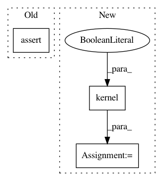

a064b0d04419f183e0fb30e1125333e5fbd803d7,gpytorch/test/base_kernel_test_case.py,BaseKernelTestCase,test_no_batch_kernel_double_batch_x_ard,#BaseKernelTestCase#,84
Before Change
actual_covar_mat = torch.cat([ac.unsqueeze(0) for ac in ij_actual_covars])
self.assertLess(torch.norm(batch_covar_mat - actual_covar_mat) / actual_covar_mat.norm(), 2e-4)
def test_smoke_double_batch_kernel_double_batch_x_no_ard(self):
kernel = self.create_kernel_no_ard(batch_shape=torch.Size([3, 2]))
x = self.create_data_double_batch()
After Change
self.assertAllClose(batch_covar_mat, actual_covar_mat, rtol=1e-3, atol=1e-5)
// Test diagonal
kernel_diag = kernel(x, diag=True)
actual_diag = actual_covar_mat.diagonal(dim1=-1, dim2=-2)
self.assertAllClose(kernel_diag, actual_diag, rtol=1e-3, atol=1e-5)
def test_smoke_double_batch_kernel_double_batch_x_no_ard(self):
In pattern: SUPERPATTERN
Frequency: 4
Non-data size: 3
Instances
Project Name: cornellius-gp/gpytorch
Commit Name: a064b0d04419f183e0fb30e1125333e5fbd803d7
Time: 2020-11-17
Author: gpleiss@gmail.com
File Name: gpytorch/test/base_kernel_test_case.py
Class Name: BaseKernelTestCase
Method Name: test_no_batch_kernel_double_batch_x_ard
Project Name: cornellius-gp/gpytorch
Commit Name: a064b0d04419f183e0fb30e1125333e5fbd803d7
Time: 2020-11-17
Author: gpleiss@gmail.com
File Name: gpytorch/test/base_kernel_test_case.py
Class Name: BaseKernelTestCase
Method Name: test_single_batch_kernel_single_batch_x_no_ard
Project Name: cornellius-gp/gpytorch
Commit Name: a064b0d04419f183e0fb30e1125333e5fbd803d7
Time: 2020-11-17
Author: gpleiss@gmail.com
File Name: gpytorch/test/base_kernel_test_case.py
Class Name: BaseKernelTestCase
Method Name: test_no_batch_kernel_single_batch_x_no_ard
Project Name: cornellius-gp/gpytorch
Commit Name: a064b0d04419f183e0fb30e1125333e5fbd803d7
Time: 2020-11-17
Author: gpleiss@gmail.com
File Name: gpytorch/test/base_kernel_test_case.py
Class Name: BaseKernelTestCase
Method Name: test_no_batch_kernel_double_batch_x_no_ard